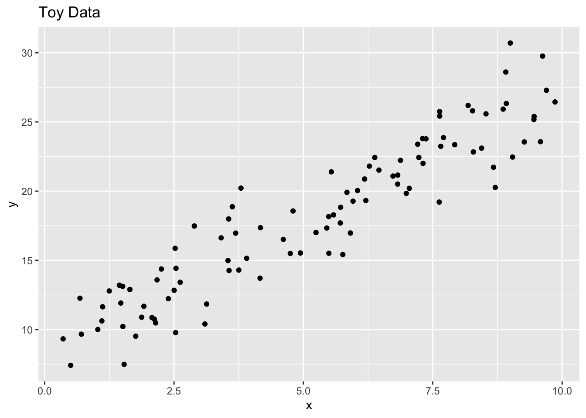
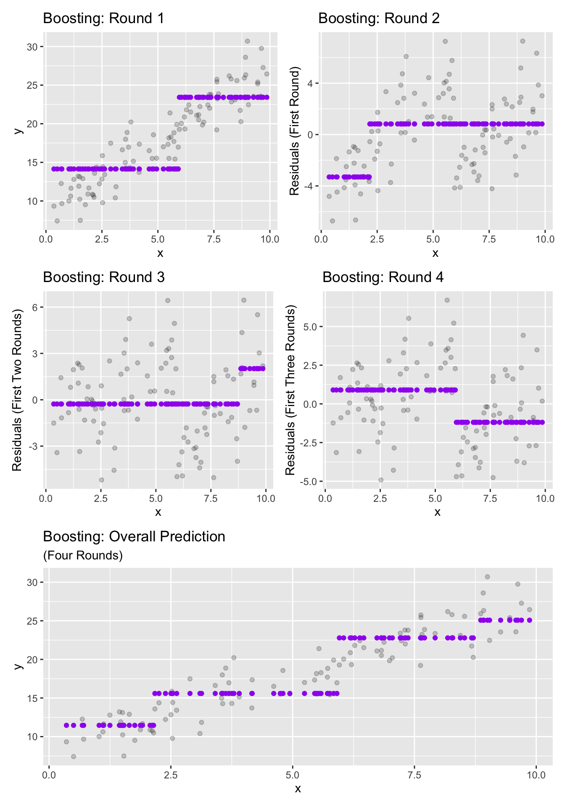

Introduction to Boosting Methods
Purpose: In this notebook we’ll continue our exploration of ensembles by looking at boosting methods. While our previous topic – bagging and random forests – looked at models in parallel, boosting methods use models in series. That is, boosting methods chain models together, passing information from previous models as inputs to subsequent models. In particular,
The Big Idea
Boosting methods typically try to slowly chip away at the reducible error. In the first iteration of boosting, we build a weak learner (a high-bias model) to predict our response – in the next iteration, we build another weak learner in order to make predictions that will reduce the error from the first model. Subsequent boosting iterations build weak learners to reduce prediction errors left over from previous rounds.
We’ll use the regression setting to introduce boosting methods in this notebook though this technique is applicable to classification as well. There are a few additional intricacies in the classification setting, but the main idea is the same. Let’s see boosting in action using a small example with a single predictor. We’ll start with a toy dataset.
We’ll plot the results of four rounds of boosting below.
New names:
New names:
New names:
• `.resid` -> `.resid...2`
• `.resid` -> `.resid...4`
We can see that the boosting iterations each try to [very slowly] reduce the total error made by the model.
Some Warnings
We should beware of the following when using boosting methods.
- Boosting methods are very sensitive to the number of boosting iterations. This is a parameter that should be tuned during the training process.
- It is important that the learners in the ensemble are weak learners. These are very high bias models – decision trees of depth 1 or 2 are a common choice.
- Something not addressed in this notebook, but important to boosting ensembles is their learning rate. This is an additional parameter which should be tuned during training. It governs how quickly the model tries to reduce prediction errors.
- Model interpretability with boosting methods is very low because the model is broken into many smaller component models.
- Training and prediction are more computationally intensive than with single models because many models must be trained and evaluated.
How to Implementat in {tidymodels}
A boosted model is a model class (that is, a model specification). We define our intention to build a boosting classifier using
boost_tree_spec <- boosted_tree() %>%
set_engine("xgboost") %>%
set_mode("classification") #or "regression"As with many of our model specifications, boosting models can be used for both regression and classification. For this reason, the line to set_mode() is required when declaring the model specification. The line to set_engine() above is unnecessary since xgboost is the default engine. There are other available engines though.
Hyperparameters and Other Extras
Like other model classes, boosted models have tunable hyperparameters. They are
mtry, which determines the number of randomly chosen predictors to offer each tree at each decision juncture.treesdetermines the number of trees in the forest.min_nis an integer determining the minimum number of training observations required for a node to be split further. That is, if a node/bucket contains fewer thanmin_ntraining observations, it will not be split further.tree_depthis an integer denoting the maximum depth of each individual tree (not available for all engines).learn_ratedetermines how quickly the model will attempt to learn (initial boosting iterations are weighted more heavily, while later iterations have less influence in the model’s ultimate predictions).- Powers of ten, for example
1e-5, 1e-3, 0.1, 10, are typically a good starting point for learning rates.
- Powers of ten, for example
Additional hyperparameters are
loss_reduction,sample_size, andstop_iter.
You can see the full {parsnip} documentation for boost_tree(), including descriptions of those last three hyperparameters, here.
Summary
In this notebook we were introduced to the notion of boosting methods. These are slow-learning techniques aimed at chipping away at the reducible error made by our models. We’ll implement boosting at our next class meeting.